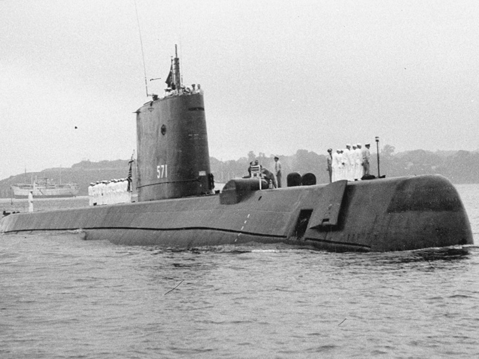

El Peral fue un prototipo de submarino con propulsión eléctrica realizado por la Armada Española según un proyecto de Isaac Peral construido en los astilleros de La Carraca, en San Fernando (Cádiz).1 Es junto con el Gymnote (Q1) francés - botado el 24 de septiembre de 1888 - uno de los primeros submarinos totalmente eléctricos del mundo y equipado con torpedos.2 Actualmente se encuentra conservado como buque museo en el Museo Naval de Cartagena, Región de Murcia.
table border = '10' class = 'center'>|  |
|
|
| |
|